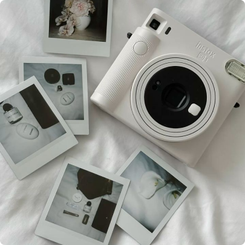

Photography
Capturing moments and emotions that spark visual ideas for my creative projects.
Creativity plays an important role in both my work and daily life. I love exploring different forms of artistic
expression that inspire new ideas and perspectives. My hobbies not only help me relax but also constantly enrich
my creativity and imagination, which I bring into my design and digital media projects.
Capturing moments and emotions that spark visual ideas for my creative projects.
I simply enjoy moving with music and expressing emotions through rhythm.
Exploring storytelling and interaction, enhancing my sense of user experience and creativity.